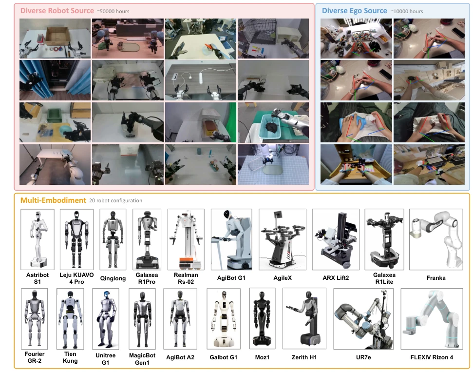
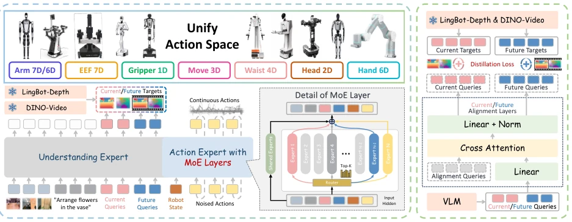
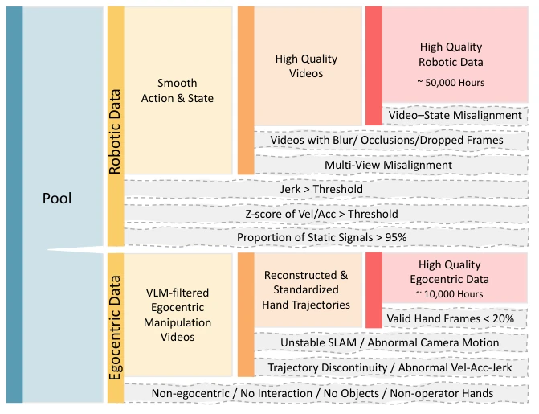
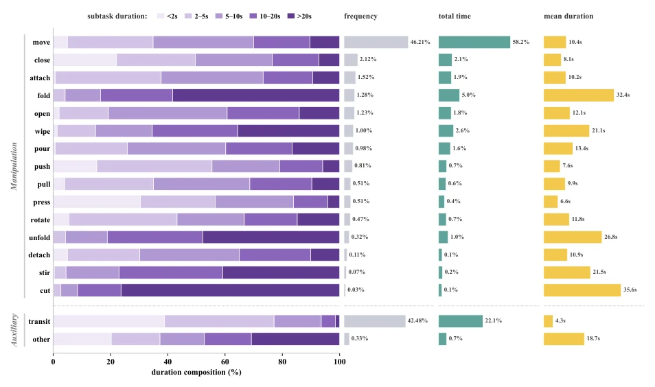
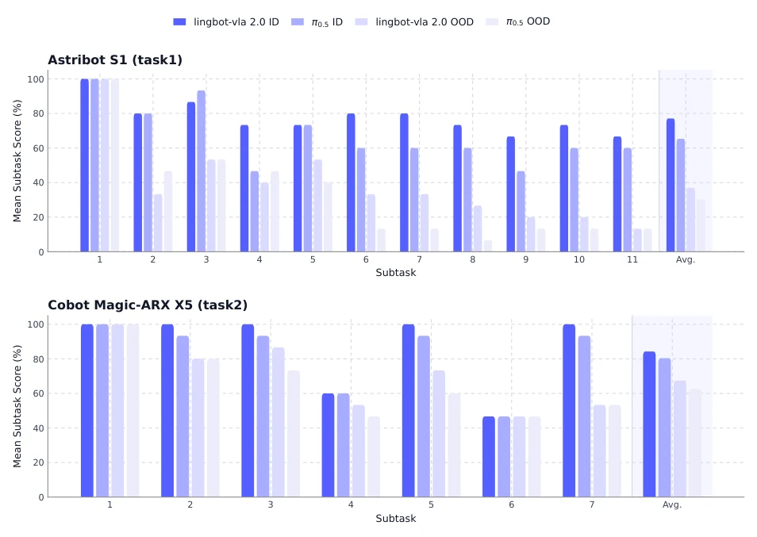
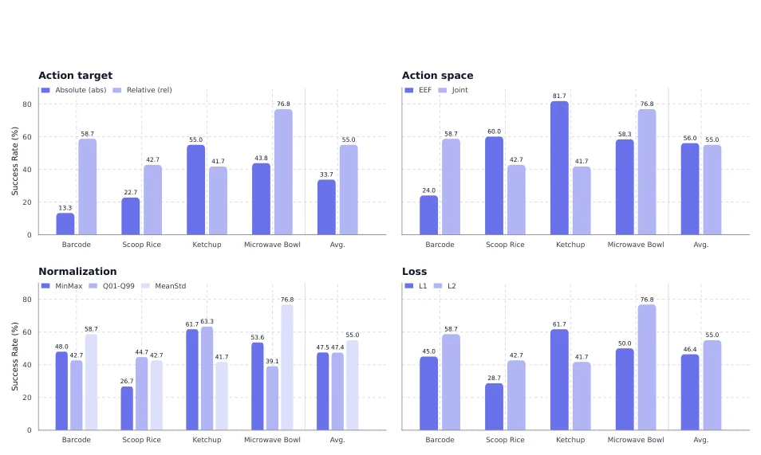
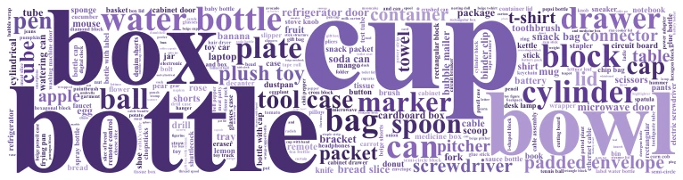
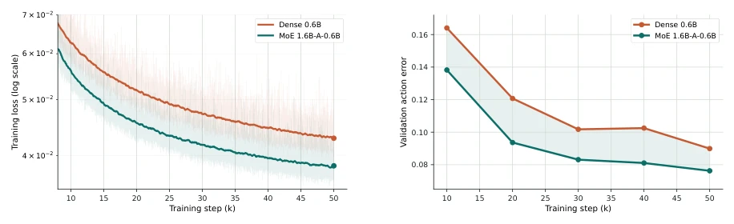
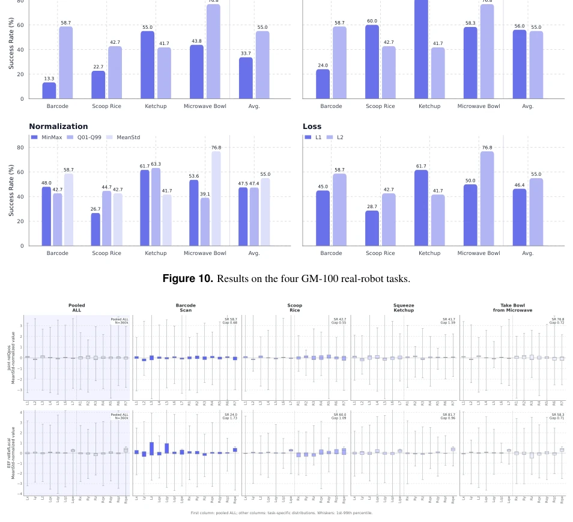
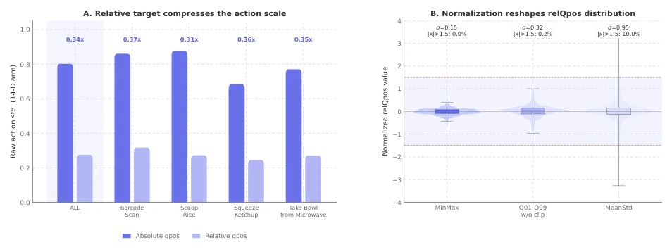

This paper attempts to bring VLA back from the laboratory to reality. LingBot-VLA 2.0 indeed stacks up resources, with 60,000 hours of data plus 20 robot configurations, which looks quite impressive. But to be honest, the biggest pain point for VLA models now is not a lack of data, but generalization and latency. Although this paper emphasizes "practice", the core still relies on distillation and MoE to stack parameters. Especially that dual-query distillation, although it sounds sophisticated, essentially it makes the model guess the future. When it comes to complex dynamic environments, whether depth estimation and semantic priors are sufficient remains questionable. However, compared to pure lab benchmarks, being able to run on GM-100 and mobile manipulation tasks at least proves they are not working in isolation. It is just that the title "From Basics to Applications" is too grand; actual deployment may still depend on inference speed and hardware adaptation. Just looking at the success rate in the paper is a bit idealized, after all, performance still shows significant degradation under OOD testing.
Although VLA models [4–6, 16] have become a popular paradigm for building general-purpose robot policies, there is a significant gap between lab benchmarks and real-world deployment. Existing work often ignores the heterogeneity of robot configurations (embodiment diversity) and the richness of action spaces in real-world scenarios. Many platforms involve degrees of freedom such as head, waist, mobile base, and dexterous hand, far exceeding standard dual-arm manipulation [13]. Furthermore, real-world execution requires predicting future scene evolution, rather than merely reacting to current observations [11, 23]. Although existing research has improved generalization by expanding robot data [5, 31] or introducing perceptual priors, it lacks coordinated handling of data quality, action coverage, and training objectives. This paper aims to fill this gap, proposing LingBot-VLA 2.0, emphasizing that the model should not only scale in size but also align with real robot needs, solving reasoning challenges across tasks, configurations, and dynamic environments, especially addressing the shortcomings of models like π0.5 in long-horizon tasks.

Figure 2. Visualization of the pre-training dataset used by LingBot-VLA-2.0. The dataset includes 20 robot embodiments with degrees of freedom in the arms, heads, waists, mobile bases, and dexterous hands.
The overall process revolves around data, architecture, and predictive capabilities. First, reconstruct the data processing pipeline, cleaning out 50,000 hours of robot trajectories (covering 20 configurations) and 10,000 hours of first-person videos, filtering noise by calculating Jerk, Z-score, and video state alignment. Second, design a 55-dimensional unified action representation, mapping heterogeneous controls to shared body part vectors, supporting head, waist, mobile base, and dexterous hand. The core architecture adopts Token-level sparse MoE layers, replacing FFN in action experts, through Sigmoid routing and auxiliary loss-free load balancing mechanisms, improving capacity efficiency under fixed compute budgets, avoiding explicit load balancing losses. To enhance temporal reasoning, introduce a dual-query distillation framework: current query $Q_t$ and future query $Q_{t+T}$ are distilled from LingBot-Depth (geometric supervision) and DINO-Video (causal temporal supervision) respectively. The depth model provides geometric priors, DINO-Video provides motion-aware features, jointly encouraging the model to predict future scene evolution, thereby improving decision-making capabilities in dynamic environments.

Figure 1. Overview of LingBot-VLA 2.0. We revamp the data processing pipeline and curate 60,000 hours of pretraining data, including 50,000 hours of robot trajectories across 20 robot configurations and 10,000 hours of egocentric human videos. Moreover, our model supports degrees of freedom for the head, waist, mobile base, and dexterous hands, enabling robots to handle more complex real-world tasks. We formulate future prediction as a proxy task, leveraging a video representation model for semantic priors and a depth estimation model for geometric cues.

Figure 3. Data processing pipeline.

Figure 5. Per-action statistics of the subtask annotations: duration composition, frequency (fraction of all subtasks), total time (fraction of the total annotated time), and mean duration. Actions are grouped as in Tab. 2; idle is filtered out of the training data and omitted here. cup bottle box bowl

Figure 8. Per-subtask performance on the long-horizon mobile manipulation benchmark. Bars report the mean subtask completion score (%) across 15 trials under both in-domain (ID) and out-of-distribution (OOD) settings.
Under the general settings of the GM-100 dual-manipulation benchmark, LingBot-VLA 2.0 achieves the best performance on both Agilex Cobot Magic and Galaxea R1 Pro, with both Progress Score and Success Rate surpassing π0.5 and previous-generation models. For example, on the Retrieve keychain task, success rate improved from 60% to 100%. In long-horizon mobile manipulation tasks, targeting Astribot S1's refrigerator classification and Cobot Magic's stove cleaning, Version 2.0 outperforms π0.5 under both in-distribution (ID) and out-of-distribution (OOD) settings, especially under OOD settings where success rate advantage is obvious (e.g., stove cleaning improved by 6.7 points). Ablation analysis shows that mixed task training and enhanced VLM backbone significantly improved object localization and future-based action planning capabilities. However, some tasks still show a gap between progress score and success rate, indicating fine placement and release steps remain difficult, and performance differences between different robot configurations suggest kinematic alignment still needs optimization.

Figure 10. Results on the four GM-100 real-robot tasks.
其他图片Other Figures

Figure 6. Word cloud of the manipulated objects in the subtask annotations, sized by frequency.

Figure 7. Comparable active-parameter scaling comparison between Dense model and MoE model using training loss on pre-training data and validation action error on GM-100 tasks.

Figure 11. Per-dimension MeanStd-normalized action distributions for joint and EEF action spaces. The first column shows the pooled distribution over all four tasks, while the remaining columns show task-specific distributions. The gap measures task-to-pooled distribution alignment based on per-dimension median and IQR differences.

Figure 12. Action targets and normalization statistics for the four GM-100 tasks. Left: relQpos substantially reduces the action scale compared with absQpos. Right: normalization changes the effective dynamic range of MeanStd-normalized relQpos; Q01–Q99 is shown in the actual unclipped setting.